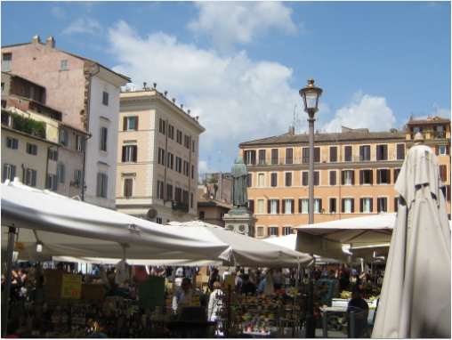

ROOMA
Ikuinen kaupunki
Rooman ostokset ja shoppailu
Roomassa on erittäin hyvä ostosmahdollisuudet. Rooman keskustassa on laaja kirjo kauppoja aina huippubrändien lippulaivaliikkeistä pieniin ja edullisiin sivukujien putiikeihin.
Ehkä tunnetuin ostoskatu on Via condotti. Kadun varrelta löydät mm. Fendin, Valentinon ja Bulgarin liikkeet. Via del Corson varrelta puolestaan löytyy ostettavaa myös hieman edullisemmassa hintaluokassa. Täältä löytyy esim. Dieselin ja Benettonin liikeet, monia kiinnostaa varmasti myös Ferrarin lippulaivaliike. Via Nazionalen varrelta löydät myös runsaasti kiinnostavia ostosmahdollisuuksia.
La Rinascente kauppakeskus sijaitsee Piazza Spagna -aukion laidalla. Muita tunnettuja kauppa- ja ostoskeskuksia ovat Parco Leonardo, Coin ja Cinecitta Due Centro Commerciale. Castel Romano on n. 25 kilometriä Roomasta sijaitseva outlet-keskus.
Jos haluat poiketa paikallisilla markkinoilla, niin kannattaa lähteä sunnuntaina aamupäivällä Porta Porteseen. Markkinat on auki klo 13 asti. Muina päivinä löydät markkinat Via Sanniolta. Campo de Fiori on historiallinen tori, joka toimii aamupäivisin (ma-la) markkinapaikkana. Tarjolla on mm. kalaa, vihanneksia ja hedelmiä.
© copyright Roomaan.fi | kaikki oikeudet pidätetään